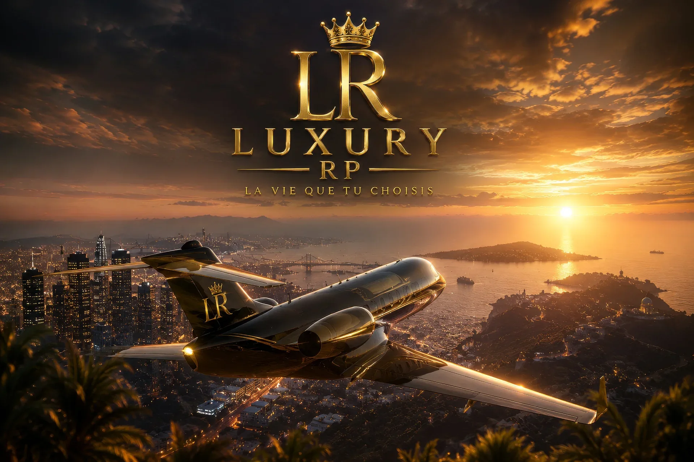

Présentation
Bloods
Territoire, loyauté, codes de rue et rivalités sous tension. Cette fiche présente l’identité, le rôle et les possibilités RP associées. Elle pourra évoluer avec des visuels dédiés, des informations de recrutement et des consignes propres à l’organisation.
Missions RP
Ce que l’on vient jouer ici.
Une fiche pensée pour clarifier les attentes, la progression et les scènes possibles.
Activités principales
- Développer l’identité du groupe
- Gérer le territoire et les alliances
- Organiser les opérations RP
- Créer des scènes lisibles
- Respecter les règles serveur
Hiérarchie type
RecrueMembreConfirméBras droitLeader
Les grades peuvent être ajustés selon l’organisation RP finale.
Galerie
Ambiance visuelle.
Visuels de référence pour présenter l’univers et l’atmosphère.



Recrutement
Envie de rejoindre Bloods ?
Le recrutement se fait via Discord ou directement en ville selon les règles RP de Luxury RP.